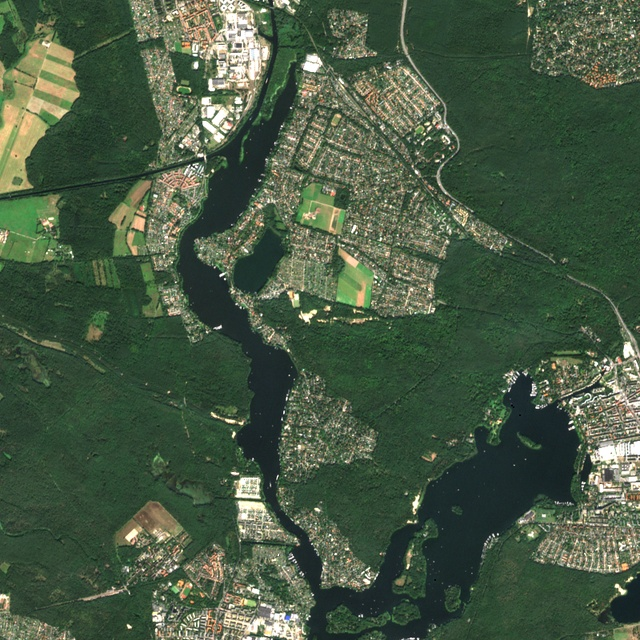
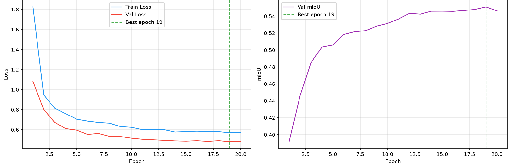
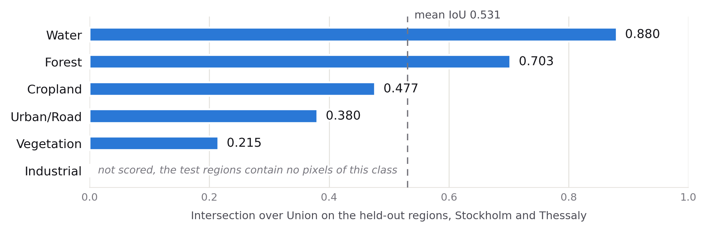
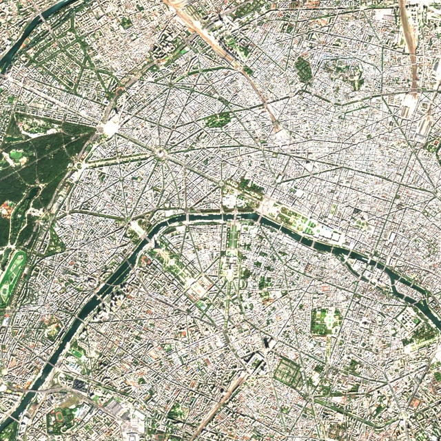
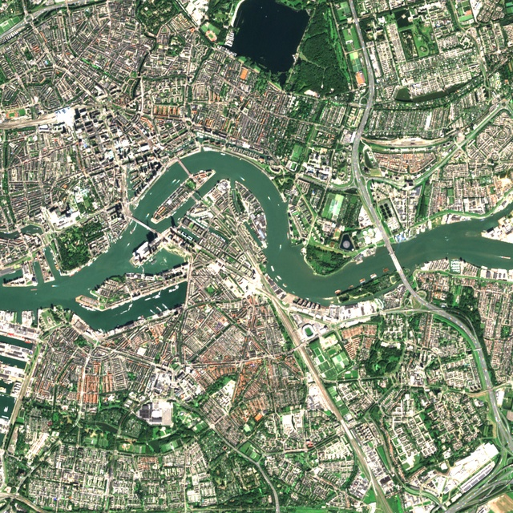
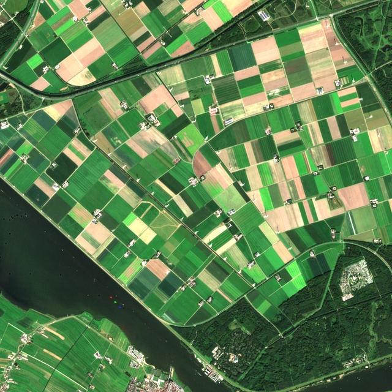
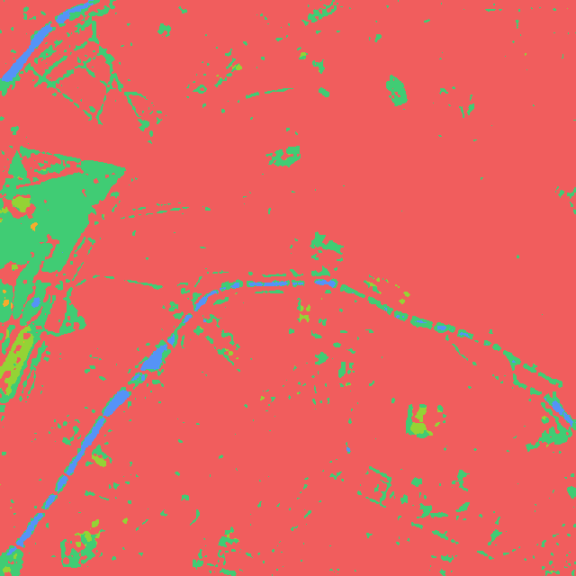
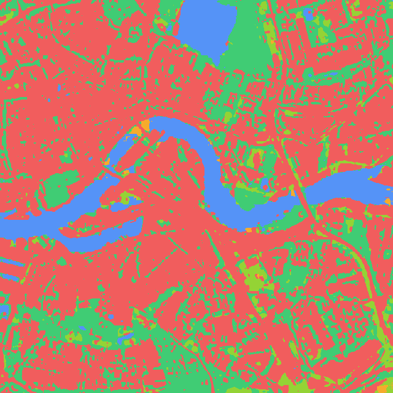
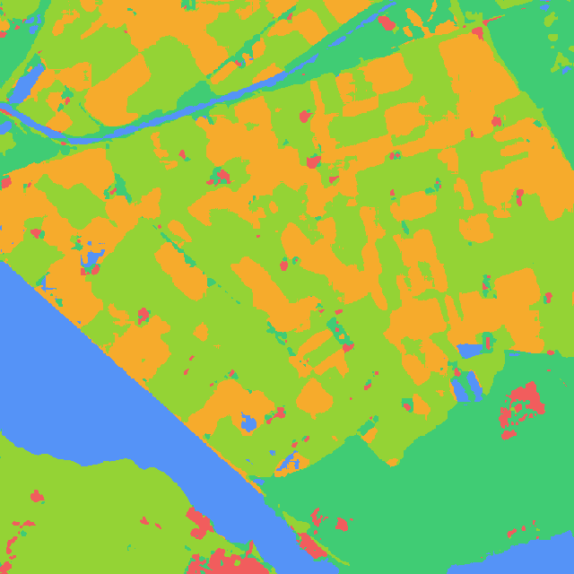

The goal: train a deep learning model to automatically classify satellite imagery into land cover types (water, forest, cropland, urban, vegetation, industrial), pixel by pixel, at 10 m resolution. The model is a U-Net with a ResNet-18 encoder, trained on Sentinel-2 imagery labelled by ESA WorldCover across six European regions.
The model was trained with minimal data, only 25 minutes on an Apple MPS GPU, using a small subset of available patches. Even with this limited training, it achieves 70.8% accuracy on geography it has never seen. With more training data and longer epochs, this architecture would scale significantly higher. The gap between 98.5% (random split) and 70.8% (geographic hold-out) is the honest measure of generalisation.
PreviewPredicted classification on held-out region, six land cover classes from a single Sentinel-2 acquisition.
70.8%
Overall accuracy
0.531
Mean IoU
0.880
Water IoU
25min
Training time
01Prediction vs Imagery
Drag the slider to compare the model's predicted classification against the Sentinel-2 true-colour composite. The model segments water, forest, cropland, urban fabric, vegetation, and industrial areas from three visible bands alone.

‹ ›
PredictionSentinel-2
02Results
Training converges after 19 epochs. The per class scores show where the model fails: vegetation and cropland are the hardest to separate with only three visible bands. Water and forest are classified reliably.

Fig 1Loss curves, training converges by epoch 19. Best checkpoint selected at minimum validation loss.

Fig 2Per class IoU on the held-out test set. The headline 0.531 is the mean of the five classes that carry test pixels.
Water
IoU 0.880. Spectrally distinct, almost no confusion with other classes.
Forest
IoU 0.703. Strong performance; occasional confusion with low vegetation at edges.
Cropland
IoU 0.477. Seasonal variability across regions degrades generalisation.
Urban
IoU 0.380. Mixed pixels at building edges; rooftop spectra vary between cities.
Vegetation
IoU 0.215. Lowest class; three bands cannot separate shrubland from grassland reliably.
03Multi-city Predictions
The trained model applied to three additional European cities. Each pair shows the Sentinel-2 input (top row) and the predicted classification (bottom row). Urban morphology, vegetation patterns, and waterways are captured differently depending on the city structure.

ParisSentinel-2 input

RotterdamSentinel-2 input

NetherlandsSentinel-2 input

ParisPredicted classification

RotterdamPredicted classification

NetherlandsPredicted classification
04Method
U-Net with a ResNet-18 encoder pre-trained on ImageNet, fine-tuned on Sentinel-2 patches paired with ESA WorldCover 2021 labels. Six training regions (Bavaria, Paris, Netherlands, Mazury, Ebro, Po delta); two held-out test regions (Stockholm, Thessaly) chosen at climatic extremes.
Architecture
U-Net, ResNet-18 encoder. Pre-trained on ImageNet, fine-tuned end-to-end on 3-band Sentinel-2 patches.
Imagery
Sentinel-2 L2A, 3 bands. Visible only (B2, B3, B4). One cloud-free acquisition per region.
Labels
ESA WorldCover 2021. 11 classes merged to 6. Co-registered at 10 m resolution.
Training
20 epochs, best at 19. 1,491 train / 165 val / 465 test patches. 25.3 min on Apple MPS.
Split
Geographic hold-out. Entire regions reserved for test, not random patches. This is the key design choice.
05Decisions & Limits
Evaluation
Hold out regions, not patches. Costs 28 points of headline accuracy but is the only split that tests generalisation.
Labels
WorldCover instead of hand annotation. Free, global, 10 m, co-registered. Caps accuracy at ~76%.
Class scheme
Eleven classes down to six. Three bands cannot separate shrubland from grassland.
Compute
Laptop-scale deliberately. 25 min on Apple MPS keeps the iteration loop short.
Reporting
Both numbers. 98.5% random split and 70.8% region hold-out. The gap is the finding.
Label ceiling
WorldCover is ~76% accurate globally. Label noise cannot be separated from model error.
Scale
1,491 training patches across six regions. Production models train on millions.
Single date
One acquisition per region. Cropland is seasonal; a multi-temporal composite would help.
Three bands
Visible only. NIR and red-edge would raise the two weakest classes substantially.
Two regions
Better than random split, still a small sample. Leave-one-region-out would be ideal.